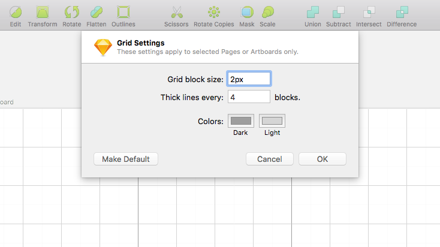
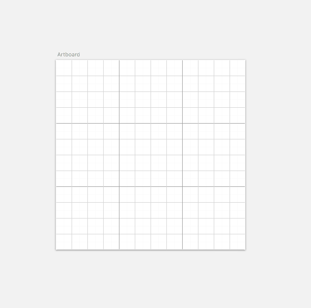
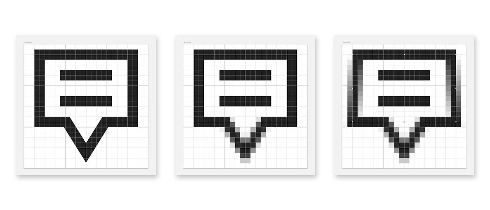
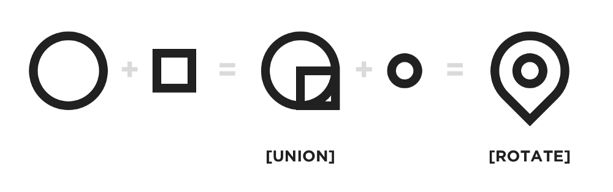
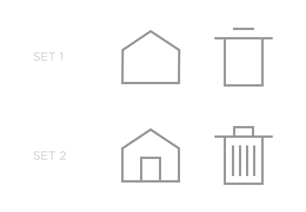

Iconography makes up the atomic level for digital interfaces. When it comes to icons, each designer has his/her own approach yet we all can agree that these tiny elements can drastically enhance or ruin any user interface.
We at Allurive Studios have set up few guidelines for iconography and layouts. I’ll be talking about our most generic icon design at 24 px.
We have adopted the specific guide after a long process of evolution, trying different grids and styles.
Preferences for icon grid in Sketch Application
View of 24 px artboard with above grid preference
We operate on 8 point grid system and the above grid preferences perfectly align with the former. Read this amazing article “Intro to the 8-Point Grid System by Elliot Dahl” to get the idea of the whole layout.
The 24 px format has been adopted following “Material design guidelines” and are built ensuring clarity and proper visibility at atomic sizes.
Few pointers for iconography:
Your icon should have crisp edges, even consistent anti aliasing. Having an edge with differing x co-ordinates like shown below in last reference will make your icon give a blurry feel.
From left to right: View of icon in vector form followed by pixel preview in crisp and jagged edge form.
Human mind has a tendency to remember geometric shapes easily. A good practice to follow is to break down a complex shape into possible geometric shapes. There can be multiple approaches to building up an icon. Break down an item with geometric shapes and brainstorm how minimal can it get without loosing the essence.
Tip: Always sketch on paper beforehand.
Construction of notification icon.
Construction of location icon.
There are 4 boolean operations in sketch application namely: Union, Subtract, Intersect and Difference. Study the shapes and how various boolean operations can be applied to them to get desired result.
Adobe Illustrator has more powerful tools for vector editing and gives way more flexibility.
Learn about boolean operations in sketch from here.
Using union operator to create heart icon.
While designing for a specific project ensure the consistency of the icons to give user a uniform feel and harmony throughout the application/website. One of the major parameters ensuring consistency is level of detail. The level of detail should be consistent throughout your icon set, elucidated below with an example.
You get the idea! Right? Icons from Set 1 must not be used with icons from Set 2.
Thank you for reading.
I hope it was constructive for you and I would greatly appreciate all kind of feedback or criticism.
Reach out to me